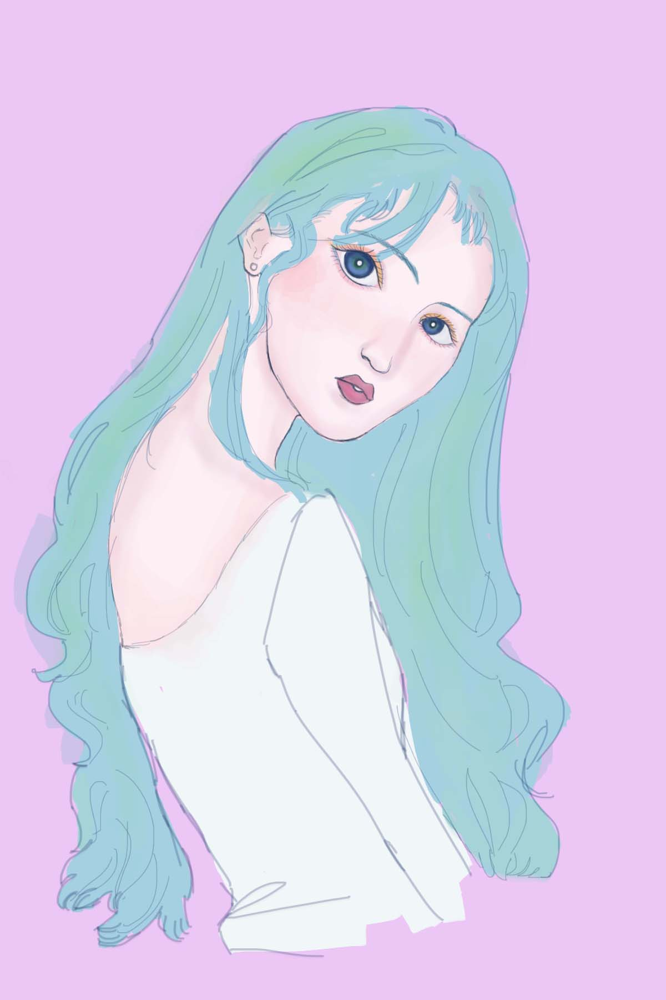
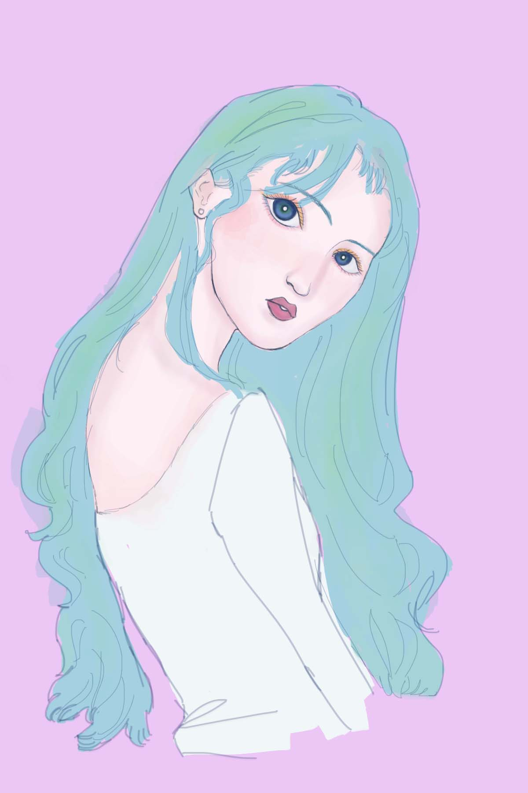
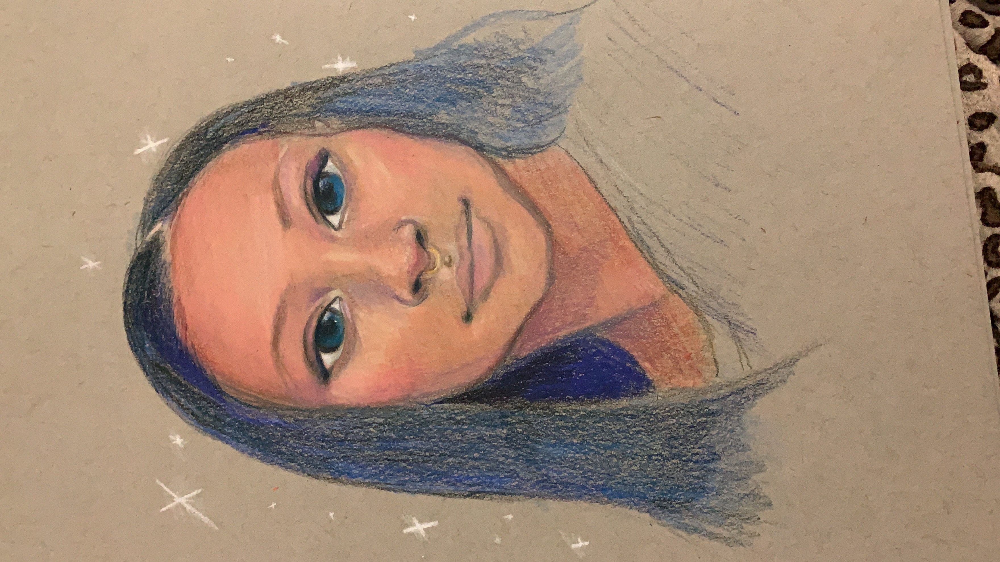
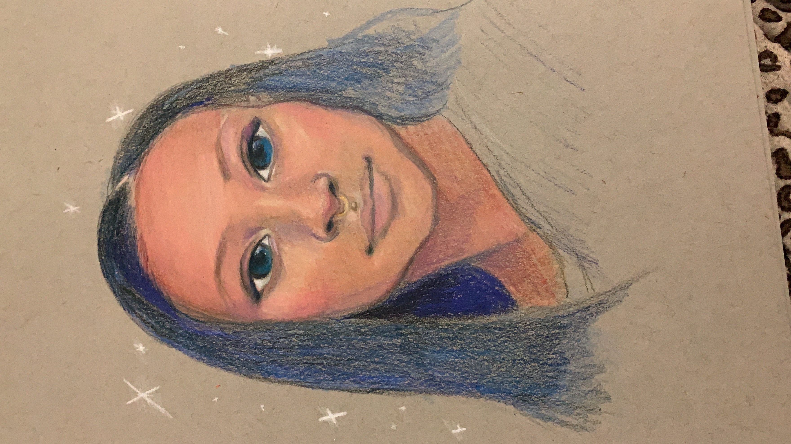
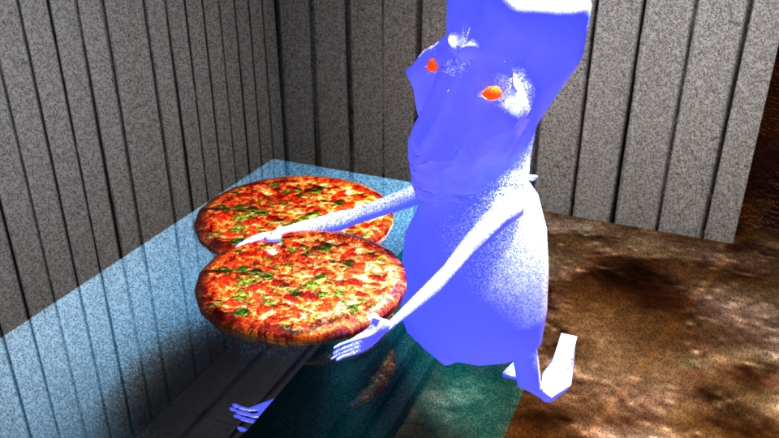

Millennia
{kind=link}
My name is Millennia and I'm a rising junior currently attending the University of Texas at El Paso (UTEP).
I'm a Computer Science major with a minor in Graphic Design, and this summer I'm an intern for the STEP program at Google!(..virtually, but it's still neat)
Sooo, a bit about me is that I've lived in El Paso, Texas for most of my life. I have a background in art and animation. Video games have been with me through it all,
and because of them I'm interested in working in game development someday. But I want to mess around with UI/UX design as I'm interested in more creative ventures within tech.
Some of my hobbies include making art, gaming, singing classical music, and learning languages(studying Korean currently).
You can also find me on GitHub, where some of my projects reside 🌼 🌼 🌼
As something special, here's some of my artwork!
 

{kind=link}
 

{kind=link}
RANDOM FACTS
So, a couple random facts about me are:
- I was in choir for 4 years
- My pinky on my right hand is broken-but it hasn't negatively affected anything I've done(well...I'll find out when I learn piano).
- I collect art prints from every art museum in the cities I travel to. My favorite one was the San Diego MOMA!
- Although I speak spanish, I can't roll my "R's".
- My first decent animation was about an alien getting pizza at a gas station(yes I have the video). In fact...I'll show you a render of a scene 
- Austin,TX and Las Vegas,NV are my favorite cities to visit.
- And finally...I do not like fish, in fact I'm pretty scared of them so I try to avoid them as much as possible.
{kind=link}
{kind=link}